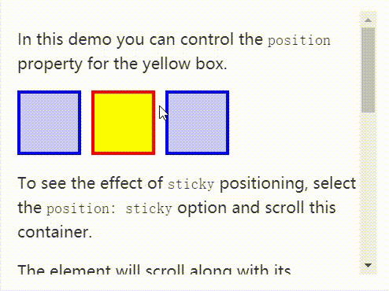

本文主要内容：
CSS的定位属性主要有三种，分别是绝对定位、相对定位、固定定位。
1 | position: absolute; <!-- 绝对定位 --> |
## 相对定位
相对定位：让元素相对于自己原来的位置，进行位置调整（可用于盒子的位置微调）。
我们之前学习的背景属性中，是通过如下格式：
1 | background-position:向右偏移量 向下偏移量; |
但这回的定位属性，是通过如下格式：
1 | position: relative; |
相对定位不脱标
相对定位：不脱标，老家留坑，别人不会把它原来的位置挤走。
也就是说，相对定位的真实位置还在老家，只不过影子出去了，可以到处飘。
相对定位的用途
如果想做“压盖”效果（把一个div放到另一个div之上），我们一般不用相对定位来做。相对定位，就两个作用：
- （1）微调元素
- （2）做绝对定位的参考，子绝父相
相对定位的定位值
left：盒子右移
right：盒子左移
top：盒子下移
bottom：盒子上移
PS：负数表示相反的方向。
↘：
1 | position: relative; |
↙：
1 | position: relative; |
↖：
1 | position: relative; |
↗：
1 | position: relative; |
绝对定位
绝对定位：定义横纵坐标。原点在父容器的左上角或左下角。横坐标用left表示，纵坐标用top或者bottom表示。
格式举例如下：
1 | position: absolute; /*绝对定位*/ |
绝对定位脱标
绝对定位的盒子脱离了标准文档流。
所以，所有的标准文档流的性质，绝对定位之后都不遵守了。
绝对定位之后，标签就不区分所谓的行内元素、块级元素了，不需要display:block就可以设置宽、高了。
绝对定位的参考点（重要）
（1）如果用top描述，那么参考点就是页面的左上角，而不是浏览器的左上角：

（2）如果用bottom描述，那么参考点就是浏览器首屏窗口尺寸（好好理解“首屏”二字），对应的页面的左下角：

以盒子为参考点: absolute
一个绝对定位的元素，如果父辈元素中也出现了已定位（无论是绝对定位、相对定位，还是固定定位）的元素，那么将以父辈这个元素，为参考点。
（1） 要听最近的已经定位的祖先元素的，不一定是父亲，可能是爷爷：
（2）不一定是相对定位，任何定位，都可以作为儿子的参考点：
子绝父绝、子绝父相、子绝父固，都是可以给儿子定位的。但是在工程上，如果子绝、父绝，没有一个盒子在标准流里面了，所以页面就不稳固，没有任何实战用途。
工程应用：
“子绝父相”有意义：这样可以保证父亲没有脱标，儿子脱标在父亲的范围里面移动。于是，工程上经常这样做：
父亲浮动，设置相对定位（零偏移），然后让儿子绝对定位一定的距离。
（3）绝对定位的儿子，无视参考的那个盒子的padding：
工程应用：
绝对定位非常适合用来做“压盖”效果。
让绝对定位中的盒子在父亲里居中
我们知道，如果想让一个标准流中的盒子在父亲里居中（水平方向看），可以将其设置margin: 0 auto属性。
可如果盒子是绝对定位的，此时已经脱标了，如果还想让其居中（位于父亲的正中间），可以这样做：
1 | div { |
我们可以总结成一个公式：
left:50%; margin-left:负的宽度的一半
固定定位: fixed
固定定位：就是相对浏览器窗口进行定位。无论页面如何滚动，这个盒子显示的位置不变。
备注：IE6不兼容。
用途1：网页右下角的“返回到顶部”
比如我们经常看到的网页右下角显示的“返回到顶部”，就可以固定定位。
1 | <style type="text/css"> |
用途2：顶部导航条
我们经常能看到固定在网页顶端的导航条，可以用固定定位来做。
需要注意的是，假设顶部导航条的高度是60px，那么，为了防止其他的内容被导航条覆盖，我们要给body标签设置60px的padding-top。
粘性定位 sticky
元素根据正常文档流进行定位，然后相对它的最近滚动祖先（nearest scrolling ancestor）和 containing block (最近块级祖先 nearest block-level ancestor)，包括table-related元素，基于top, right, bottom, 和 left的值进行偏移。偏移值不会影响任何其他元素的位置。
该值总是创建一个新的层叠上下文（stacking context）。注意，一个sticky元素会“固定”在离它最近的一个拥有“滚动机制”的祖先上（当该祖先的overflow 是 hidden, scroll, auto, 或 overlay时），即便这个祖先不是真的滚动祖先。这个阻止了所有“sticky”行为（详情见Github issue on W3C CSSWG）。

5、z-index属性：
z-index属性：表示谁压着谁。数值大的压盖住数值小的。
有如下特性：
（1）属性值大的位于上层，属性值小的位于下层。
（2）z-index值没有单位，就是一个正整数。默认的z-index值是0。
（3）如果大家都没有z-index值，或者z-index值一样，那么在HTML代码里写在后面，谁就在上面能压住别人。定位了的元素，永远能够压住没有定位的元素。
（4）只有定位了的元素，才能有z-index值。也就是说，不管相对定位、绝对定位、固定定位，都可以使用z-index值。而浮动的元素不能用。
（5）从父现象：由父元素z-index数值大小决定。意思是，如果父亲1比父亲2大，那么，即使儿子1比儿子2小，儿子1也能在最上层。
z-index属性的应用还是很广泛的。当好几个已定位的标签出现覆盖的现象时，我们可以用这个z-index属性决定，谁处于最上方。也就是层级的应用。
层级：
（1）必须有定位（除去static）
（2）用z-index来控制层级数。
总结：
| 值 | 描述 |
| absolute | 生成绝对定位的元素，相对于 static 定位以外的第一个父元素进行定位。 元素的位置通过 "left", "top", "right" 以及 "bottom" 属性进行规定。 |
| fixed | 生成绝对定位的元素，相对于浏览器窗口进行定位。 元素的位置通过 "left", "top", "right" 以及 "bottom" 属性进行规定。 |
| relative | 生成相对定位的元素，相对于其正常位置进行定位。 因此，"left:20" 会向元素的 LEFT 位置添加 20 像素。 |
| static | 默认值。没有定位，元素出现在正常的流中（忽略 top, bottom, left, right 或者 z-index 声明）。 |
| inherit | 规定应该从父元素继承 position 属性的值。 |